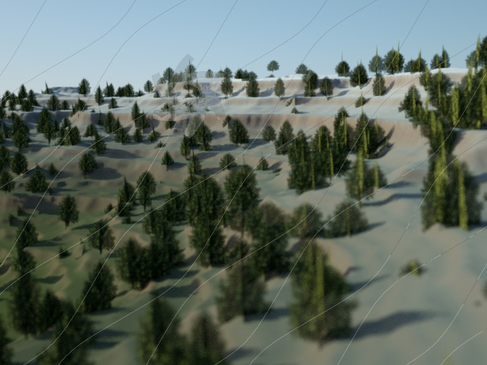

Will We Soon Be Able To Generate Photo-Realistic Films On Demand? A Reality Check
A little while ago I saw a fascinating comment on Hacker News, echoing a sentiment that I’ve seen around the tech community as a whole.
> > Within a few years, video games will be generating photo-realistic feature films on demand, with unique scripts and characters and worlds adapted to the viewer's tastes and mood. > >
I’ve spent the last 20 years attempting to figure out how to generate as much as possible of the movie-making process in a computer game - with successes including a well-received feature film made using computer games tech and feature-length work for companies like Electronic Arts. So I may possibly be the best person in the world to comment on this particular statement, and it’s one of considerable interest to me.
I originally wrote a lengthy reply to his comment on HN, and I’m going to expand on it here.
Let’s take the statement piece by piece.
Photo-Realistic
First thing to note: over the last 30 years, real-time 3D technology - games technology, in other words - has consistently lagged behind the state of the art in non-realtime CGI by approximately 15 years. The first true 3D real-time humanoid-based engine (Quake) happened about 13 years after the first 3D film (The Works). Right now, Total War: Warhammer is producing visuals that are a bit, but not too far, behind the mass-battle scenes of Lord of The Rings. And so on.
Given that, if we were able to produce photorealistic humans right now, we’d expect realtime photorealism to be about 15 years away. Spoiler: we can’t. Whilst we can produce remarkable still images and even short 20-30 second clips, we’ve yet to see anything approaching a successful feature film with a photorealistic CGI human as the star. We can do apes very well, but humans are still a considerable distance off.
I can say with considerable certainty that the quality of current realtime CGI characters is definitely nowhere near good enough. In fact, I’ve recently stopped creating real-time CGI films after nearly 20 years doing that because the current state of the art appears to be right at the bottom of the Uncanny Valley - about where pre-rendered CGI was 15 years ago, in fact.
Films On Demand

So is an AI director and editor plausible?
Ignoring the script, yes, it’s possible. We’re not there yet but we’re getting there.
Programmatic editing is a major growth sector right now, as people take gigabytes of holiday video footage and then can’t face editing it down. Having edited massive piles of footage for documentary-style content in the past, I can empathise. There are a number of startups all competing in this space, but probably the most promising one is Shred.
Editing doc-style footage is arguably a harder problem than editing narrative footage, at least to baseline competency levels. A few years of serious effort could probably make this happen.
Directing, DOP and camerawork is another area where a lot of research has taken place over the years. It hasn’t gone much beyond the academic sector thanks to lack of demand. Generally directors like to direct, and camerawork in game cutscenes is fast enough compared to the rest of the process that the research time probably isn’t worth it. But in principle it’s not too different to constructing a sophisticated FPS bot. I’d mark this one down as “probably doable”.
However - and this is a big however - there is a huge difference between workmanlike directing and artistic, high-quality directing. You can probably get the equivalent of a bad soap opera out of a program in the near future - but getting a program to produce the equivalent of Roger Deakins’ work as a cinematographer is in the “computer that creates art” problem pile. It may well require strong AI. If that happens, well, computer-generated films will not be the #1 topic of conversation…
Characters

Procedurally generating human character models, assuming you’ve solved the photorealism problem, is pretty easy. You can do it with Daz3D, Maya, and a MEL script.
Procedurally generating them to fit a specific role, however, is far harder. My best guess would be that you could get somewhere by giving the computer some specific rules to follow - strong jaw for action heroes, big eyes for romantic heroine - but I’ve no idea how effective that would be. Alternatively, we could give a regret-based algorithm a bunch of adjectives and feed the results to a panel of Mechanical Turkers who say how close the algorithm has gotten to the desired result. That might well work really well, but that’s largely because top-end machine learning is scary. Or it might work very well 75% of the time and produce hideous deformed monstrosities the other 25%. It’s very hard to tell.
Procedurally generating the characters’ motion, and particularly the characters’ emotion, is closing on being impossible with current technology. You can get to Sims levels of generation pretty easily, but the looping animations and lack of characterisation are very obvious there. Getting beyond that to genuinely unique motion is very hard, but is an active area of interest for game developers at the moment: the Euphoria engine can produce some very impressive results in a limited range of circumstances, and some indie game developers are pushing procedural animation as far as it will go (seriously, watch, it’s a fascinating talk).
However, this is still very early-stages stuff. Most procedural animation works by modifying existing animations rather than creating them from scratch, and there’s very little discussion of performance - as in an actor’s performance - in this tech. Again, we might be able to get to a very wooden actor using a combination of a massive mocap library and procedural animation, but getting to the Sir Ian McKellen simulator might require a theory of mind or strong AI.
Worlds

Procedural world generation is very promising right now. Of course, almost everyone is aware that it’s possible to procedurally generate stunning landscapes, albeit blocky ones. I’ve experimented extensively with using procedural generation for films, up to and including doing some Minecraft-a-like work, and it’s got massive promise.
Procedural generation is already used extensively in film CGI - it’s pretty much the raison d’etre of expensive, high-end 3D package Houdini. And programs like World Machine allow the user to create massive, complex landscapes very rapidly.
However, it still requires direction and tweaking. It’s possible to see how a procedural script could take a rough animatic with areas marked “trees”, “mountain” or “city” and effectively act as a “make pretty” button, but creating sets from just a script direction is much harder.
Unique Scripts Adapted To The Viewer’s Taste And Mood
And finally we hit the crunch point.
Recommending films based on the viewer’s taste and mood is certainly very doable, and we can even start to generate projects based on data-driven demand. Famously, that’s how “House Of Cards” came to be: when Netflix went datamining, they found that people who like political thrillers also like David Fincher and Kevin Spacey.
But a program that can write a script? Nope, we’re nowhere with that.
Generative text is hot right now. There’s a subreddit entirely devoted to computer-generated Reddit posting. Computerised reporters are gaining steam. But all the efforts here are still pretty primitive.
And that’s just teaching a computer to write intelligible text. Teaching it to write a story is altogether harder.
There’s NaNoGenMo, the AI Generated Novel equivalent to NaNoRiMo, but nearly all the generated novels are based on hacks rather than anything actually creating a story structure. There are also researchers - a lot of them - working on generating stories on computer, but so far, their work is extremely primitive. Scheherazade, one of the most sophisticated programs, produces descriptions of everyday activities - it’s considered successful when “ “people will read the story and recognise the activity and not find too many obvious errors”.
Essentially, there’s no evidence that it’s possible to generate a narrative using a computer, let alone write a script, let alone write a script that hits the notes the viewer requires.
Conclusion
So, in short, we might be looking at Hollywood being replaced completely at some point, but I doubt it’ll happen in the next 20 years.
However, what IS a huge threat to Hollywood is the increased power of indie filmmakers with technological assists.
One filmmaker today can do things that would have required a crew of 20 back in 1993. The cost of filmmaking is plummeting. And that certainly is a threat to Hollywood.
That’s where I’m focusing my efforts at the moment - becoming a cyborg filmmaker, as it were.
If you want to follow how that goes, hit the button below to get updated as I progress!